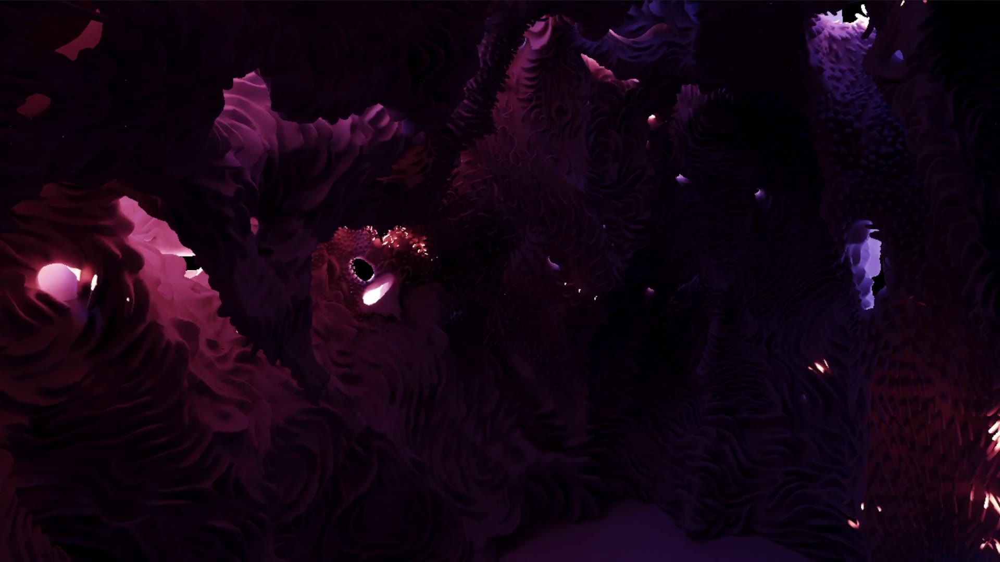

Loading...
Gloam. Entre chien et loup is a walkable virtual-reality sculpture by Samuel Arsenault-Brassard: a pierced stone dome, hand-sculpted in virtual reality, that you explore on foot in a headset, crouching and sitting inside it. There is nothing to hold and nothing to press: just the body in the room. Light comes in through the openings as the sun moves through a day cycle toward the violet of dusk ("entre chien et loup", the hour between dog and wolf), with every moment of that light computed in advance at high resolution and streamed to the headset at 90 frames per second.

These pages follow the work in progress as the piece becomes a living place: weather (rain that behaves like real water on real stone, wind, dust that settles and is partly washed away), a ground under the sculpture shaped by years of that weather, and a custom real-time player built for it. Every behaviour comes from physics and published measurements rather than effects tuned by eye, and the method, what was tried and what was set aside are kept here as a record.
Loading...